Satu sistem WhatsApp untuk lead, booking, order dan follow-up.
Bina automation dengan AI, jawab pertanyaan 24/7, susun customer dalam CRM dan gerakkan tindakan seterusnya—untuk bisnes produk, servis, appointment atau sales team.
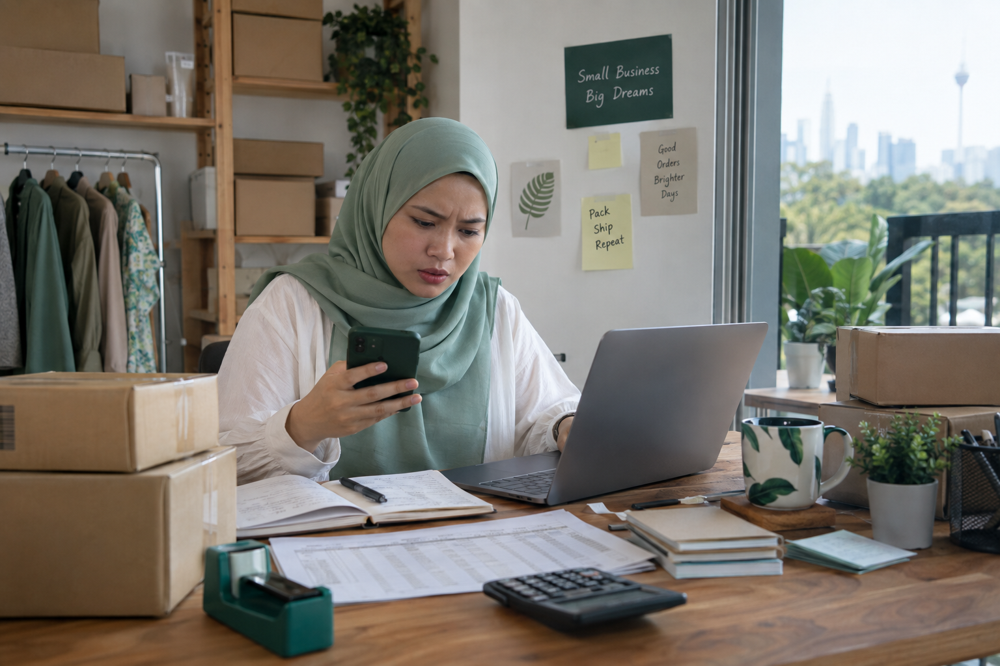
Berapa banyak peluang terlepas kerana lambat reply dan lupa tindakan seterusnya?
Apabila chat, lead, booking, order dan follow-up berada di tempat berbeza, owner tetap perlu memantau semuanya sendiri.
- 01Customer menunggu terlalu lamaPertanyaan masuk ketika team sibuk atau selepas waktu bekerja.
- 02Lead dan booking hilang dalam chatTiada pipeline jelas untuk tahu siapa perlu di-follow-up.
- 03Team buat kerja berulangSoalan, reminder, booking dan status pesanan dijawab satu persatu.
Daripada mesej pertama hingga tindakan seterusnya—semuanya bersambung.
Sama ada matlamat anda ialah lead, appointment, bayaran atau order, Terasetia menyatukan proses yang biasanya memerlukan banyak aplikasi.
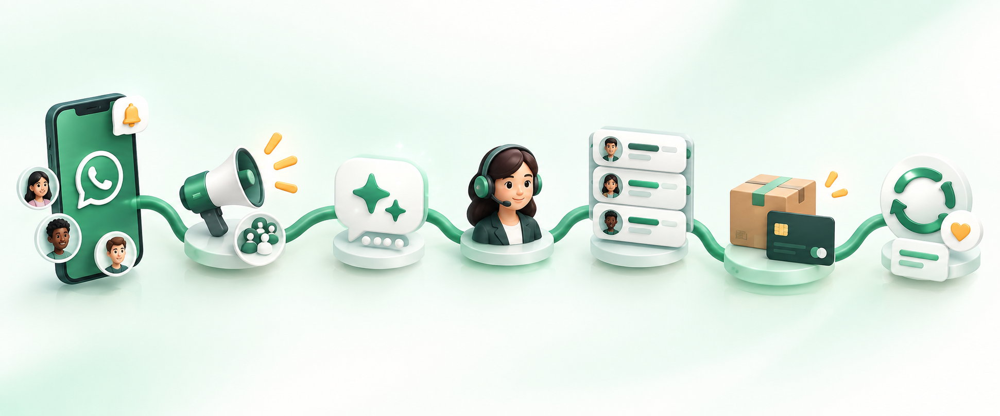
- 1Customer masuk
- 2AI jawab & tapis
- 3Team ambil alih
- 4Booking, order atau follow-up
Describe sahaja. AI bina flow yang boleh anda edit.
Pilih FAQ, lead, booking atau order. TeraAI hasilkan draft—anda semak sebelum live.
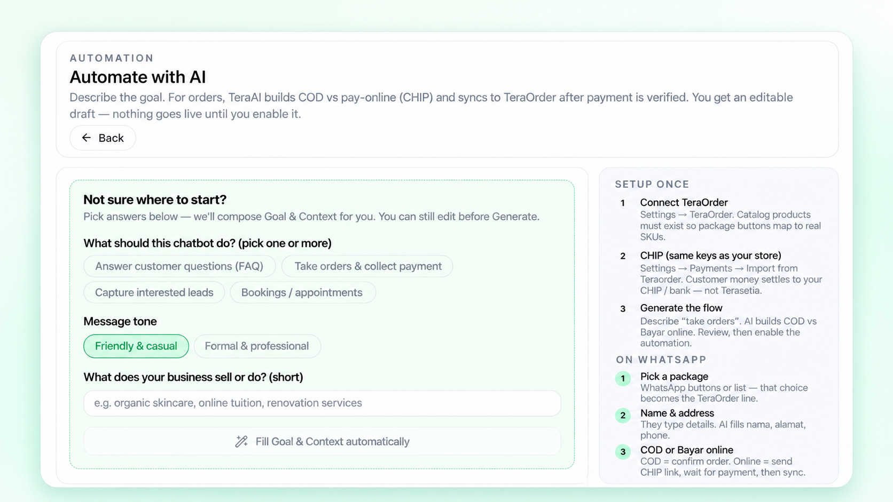
Nampak semua flow. Hidupkan bila bersedia.
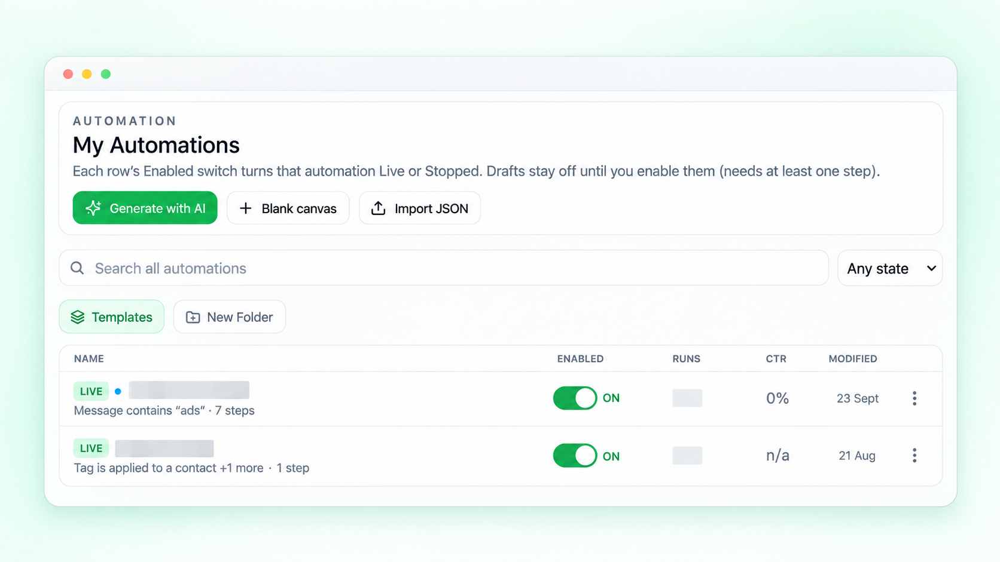
Customer mesej. Sistem terus bertindak.
Flow mengumpul maklumat, mengikut pilihan customer, memproses bayaran dan menghantar order ke OMS secara automatik.
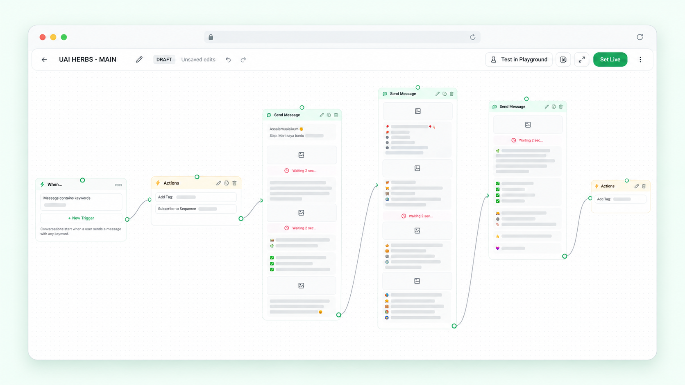
Prospek belum balas? Follow-up terus berjalan.
Follow-up bermula berdasarkan tag, status order atau flow—dan berhenti secara automatik apabila objektif tercapai.
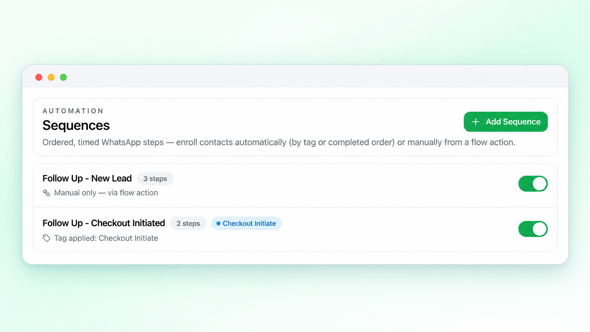
Hantar mesej yang tepat kepada customer yang tepat.
Bahagikan customer mengikut kumpulan, gunakan template Meta yang diluluskan dan pantau status mesej dihantar, diterima serta dibaca.
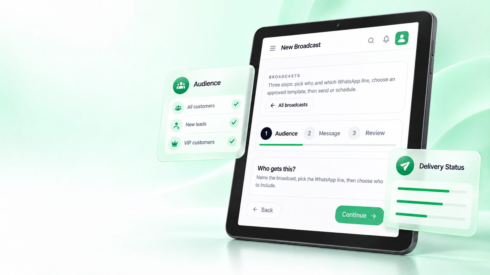
Customer bertanya. Sistem pilih jawapan yang paling sesuai.
Soalan biasa dijawab melalui flow atau keyword. Jika tiada jawapan yang sepadan, TeraAI membantu—dan team boleh ambil alih bila perlu.
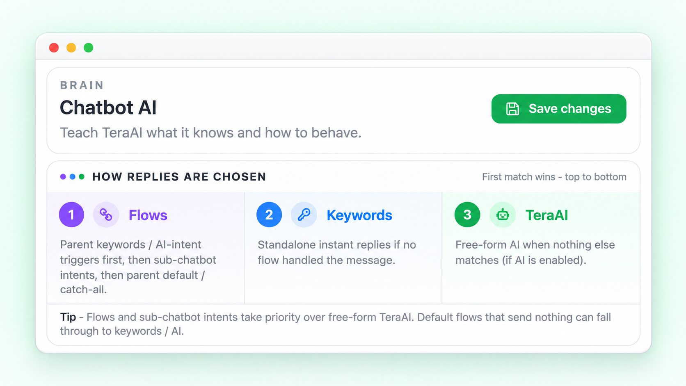
Satu bot utama. Pakar berbeza untuk setiap topik.
Route pricing, booking atau support kepada subchatbot yang paling sesuai.
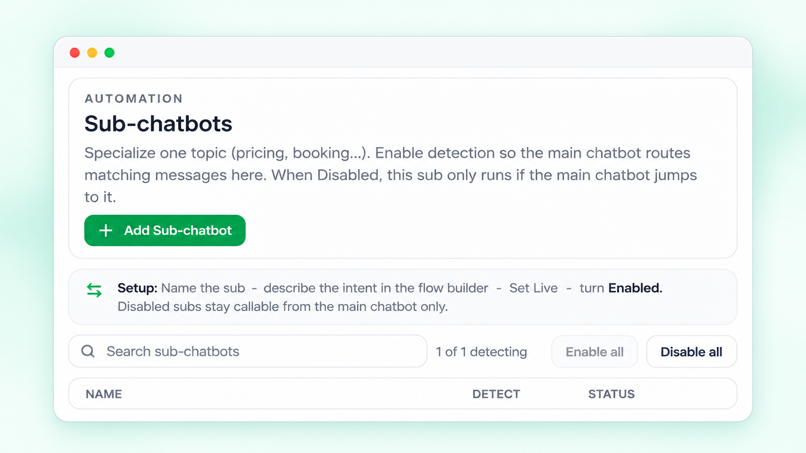
Daripada “nak order” terus menjadi pesanan dalam TeraOrder.
Kumpul detail, pilih COD atau CHIP, kemudian cipta order hanya selepas status disahkan.
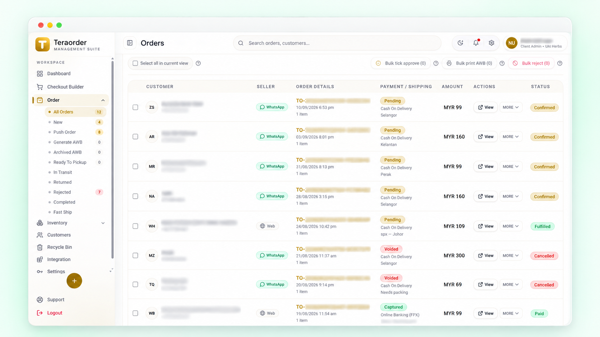
Setiap prospek jelas berada di peringkat mana.
Susun database customer mengikut proses bisnes anda. Nama stage boleh ditukar dan contact boleh dipindahkan apabila deal bergerak.
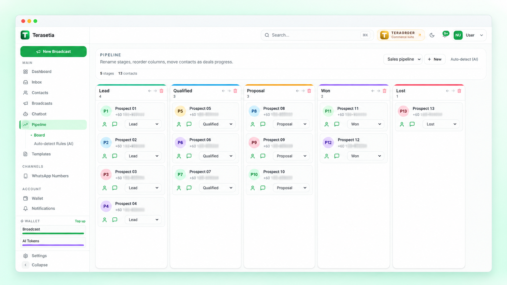
Laptop tutup, operasi WhatsApp tetap berjalan.
Layan WhatsApp rasmi, lihat tags dan ambil alih daripada AI terus dari Android.
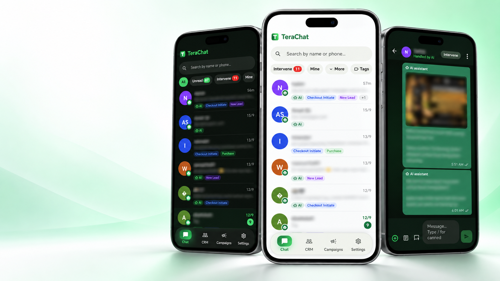
Jika customer menghubungi anda melalui WhatsApp, Terasetia boleh membantu.
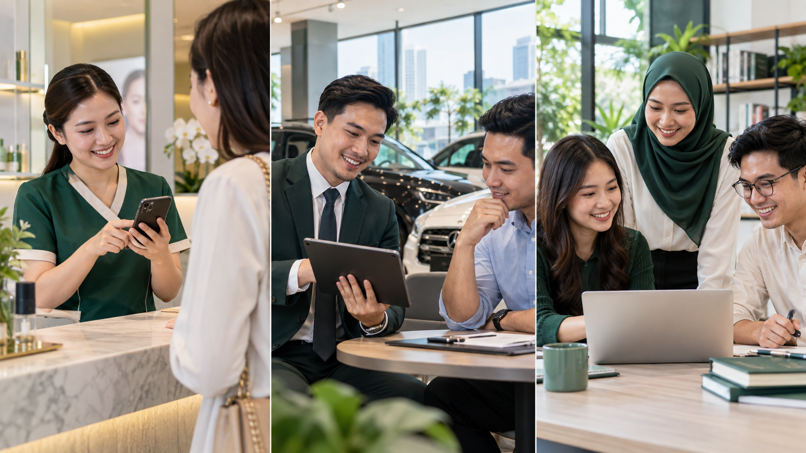
Daripada idea kepada automation dalam empat langkah.
- 1Sambung WhatsApp
- 2Masukkan konteks
- 3Generate dengan AI
- 4Uji & aktifkan
Dan semua tools penting dalam satu tempat.
Unified Inbox
WhatsApp CRM
Sales Pipeline
Analytics
API & Webhooks
Team Access
Mula percuma. Upgrade apabila bersedia untuk live.
Terokai sistem dahulu tanpa kad dan tanpa trial yang tamat.
Free Forever
Cuba CRM, chatbot playground dan asas platform.
- 100 contact conversations
- Basic analytics dan CRM
- 1 user seat
- 1 chatbot profile
- Playground sandbox
- Webhooks dan API access
Pro Subscription
Live WhatsApp, AI dan automation untuk team sales.
- Unlimited contact conversations
- Full analytics, CRM dan pipeline
- AI chatbot dan automation sequences
- 5 user seats
- 1 WhatsApp Business account
- 3 chatbot profiles
- Webhooks, API dan TeraOrder
Caj Meta/WhatsApp, broadcast wallet, AI token atau add-on tertentu mungkin berasingan mengikut penggunaan. Semak butiran semasa sebelum mengaktifkan pelan.
Sebelum anda sambungkan WhatsApp.
Masih ada soalan? Mulakan Free Forever dan terokai dashboard dahulu.
Buka akaun percuma →Adakah Terasetia menggunakan WhatsApp rasmi?
Ya. Terasetia dibina untuk laluan WhatsApp Business API dengan approved templates, quality monitoring dan messaging limits daripada Meta.
Boleh kekalkan nombor WhatsApp Business sedia ada?
Terasetia menyediakan pilihan Coexistence untuk nombor yang layak, atau anda boleh menggunakan nombor baru melalui Cloud API. Kelayakan akan disemak semasa sambungan.
Adakah saya perlu tahu coding?
Tidak. Nombor, templates, chatbot, automation dan campaigns boleh dikonfigurasi melalui dashboard.
Apa yang AI Automation Generator boleh bina?
Anda boleh meminta AI menyediakan draft flow untuk FAQ, lead qualification, booking atau appointment, serta order dengan COD atau bayaran online. Draft boleh diedit dan tidak akan live sehingga anda mengaktifkannya.
Adakah Terasetia hanya untuk bisnes ecommerce?
Tidak. Flow boleh disesuaikan untuk bisnes servis, klinik, kecantikan, property, automotive, pendidikan, retail dan mana-mana operasi yang menerima pertanyaan atau lead melalui WhatsApp.
Bila AI akan serahkan chat kepada manusia?
AI boleh menyerahkan conversation apabila tidak yakin, apabila flow menetapkan handover atau apabila agent memilih Intervene.
Boleh urus WhatsApp tanpa membuka laptop?
Ya. TeraChat untuk Android membolehkan team melihat inbox, filter conversation, melihat CRM tags dan mengambil alih chat daripada AI.
Ada caj lain selain langganan?
Penggunaan Meta/WhatsApp, broadcast wallet, AI tokens dan add-ons boleh mempunyai caj berasingan. Kos sebenar bergantung pada penggunaan dan kategori mesej.
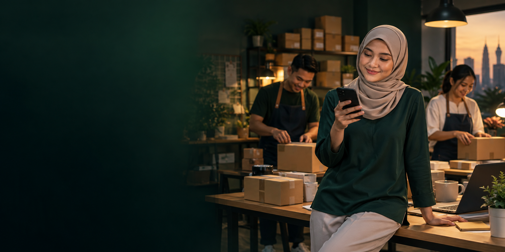
Jangan biarkan peluang customer berhenti setakat satu chat.
Bina sistem WhatsApp yang menjawab, menyusun lead, mengurus booking atau order dan membuat follow-up bersama team anda.